AI Academy · Level 2 · Grade 7 · Week 21 · Student lesson
Similarity by Selected Traits
Learn to understand, design, build, test and explain AI systems responsibly.
Project: Transparent Book Recommender
Before you start
Week 9: selected features determine what similarity means.
Plan time to read, investigate and explain. Keep predictions separate from observations.
Student lesson · 1 of 14
Your mission
Your learning target
I can represent items with numeric features.
I can calculate a simple distance.
I can explain how units and chosen features affect similarity.
Remember before reading
Close your notes first. A rough first answer helps us choose the right starting point; it is not a score for your ability.
Without opening the old lesson, explain one key idea from Repair Bias in Data. Give an example and a mistake that the idea helps you avoid.
Without opening the old lesson, explain one key idea from Missing Data. Give an example and a mistake that the idea helps you avoid.
Without opening the old lesson, explain one key idea from Choose Informative Questions. Give an example and a mistake that the idea helps you avoid.
After trying, check the relevant lesson or ask your teacher. Change the part of your explanation that the evidence shows was wrong.
Week 21: Similarity by Selected Traits
Different feature choices produce different notions of closeness.
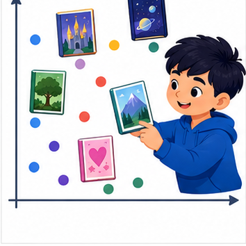
THINKER MISSION
Compute simple distance on genre, length, and difficulty.
Thinker name and date:
Readiness for the connected explanation
What does abs(3 - 7) measure? If unfamiliar, calculate the positive gap.
This week’s end goal
By the end, I can calculate a feature distance and state how scaling changes its meaning.
Student lesson · 2 of 14
Notice the evidence
PICTURE STORY
Notice → Predict → Explain
Begin with visible evidence. Do not explain more than the picture and information support.
MYSTERY
The learners must use similarity by selected traits to solve a problem. What information do they have? What decision or calculation do they make? What would count as evidence that it worked?
Three observations (what you can point to):
My prediction and the clue supporting it:
A closer explanation
A fictional activity chooser represents each activity with energy and group-work ratings on a 0 to 5 scale. A learner requests [2, 4]. We compare options by adding absolute differences. This is a chosen rule for similarity; it is not a learned model or an objective measure of quality.
Student lesson · 3 of 14
See how it works
VISUAL MECHANISM
Input → Process → Output
Trace the information. At each stage, ask what changed and how you could test it.
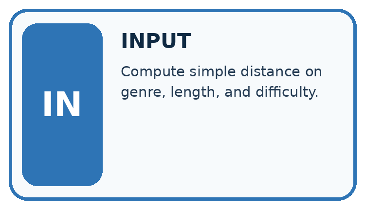
↓
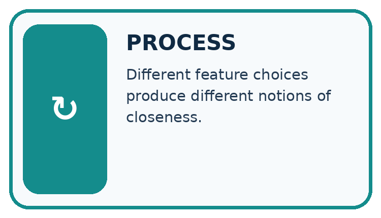
↓
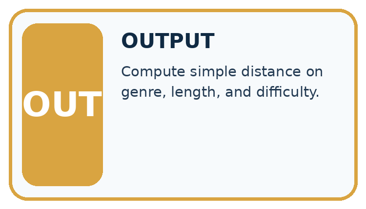
Which stage could fail even when the other two are correct? Explain:
A closer explanation
target = [2, 4]
options = {"Sketch": [1, 3], "Relay": [5, 4]}
for name in options:
features = options[name]
distance = (abs(features[0] - target[0])
+ abs(features[1] - target[1]))
print(name, distance)Follow the evidence
abs gives a nonnegative gap. Under this rule Sketch is closer. Feature order must match: first energy, then group work. Both scales are 0 to 5, but that does not prove one unit has identical practical meaning in both features.
Calculate a gap one feature at a time
Keep the features in the same order: energy first, group work second. For target [2,4] and Sketch [1,3], the gaps are abs(1-2)=1 and abs(3-4)=1; the distance is 2. Relay [5,4] has gaps 3 and 0, so its distance is 3. Smaller means closer under this particular rule. It does not mean better in every way, because the two recorded features leave out other needs.
Connect the picture and the explanation
Point to the input, the deciding step and the result in this week’s visual. Explain the same step in ordinary words. A picture helps when you can say what each part represents.
Student lesson · 4 of 14
Compare the cases
CASE GALLERY
Four Tests, Four Kinds of Evidence
A system is not understood until it survives more than one comfortable example.


NORMAL CASE: predict and name evidence. BOUNDARY CASE: predict and name evidence.


MISSING INFORMATION: predict and name evidence. TRANSFER CASE: predict and name evidence.
Which case is most likely to reveal a hidden assumption? Why?
Change one thing in the pictured case
Change: Give the first-coordinate difference weight 2 while the second keeps weight 1.
Prediction: Distances become A=3, B=4, C=3; A and C tie.
Reason: The representation’s comparison rule changes; the supplied vectors stay the same.
Student lesson · 5 of 14
Words that unlock the idea
VOCABULARY LAB
Words You Can Use to Reason
A definition matters when you can recognize the idea, use it, and contrast it with a near-miss.
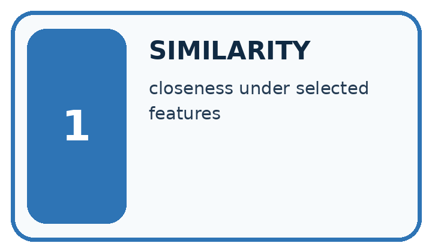
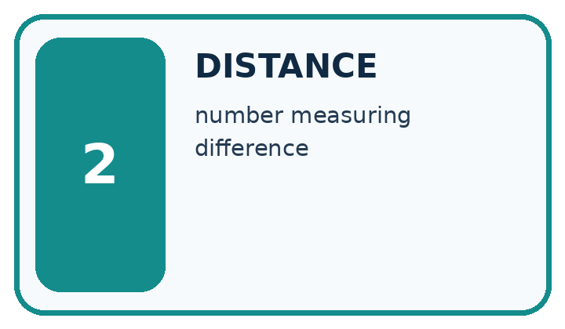
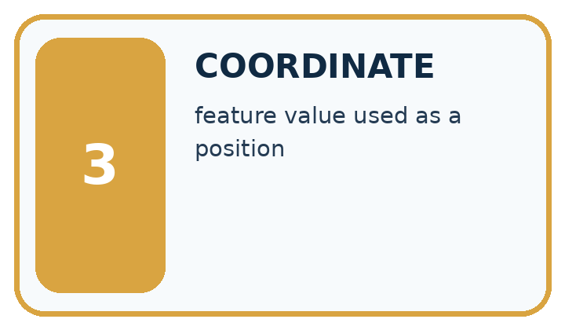
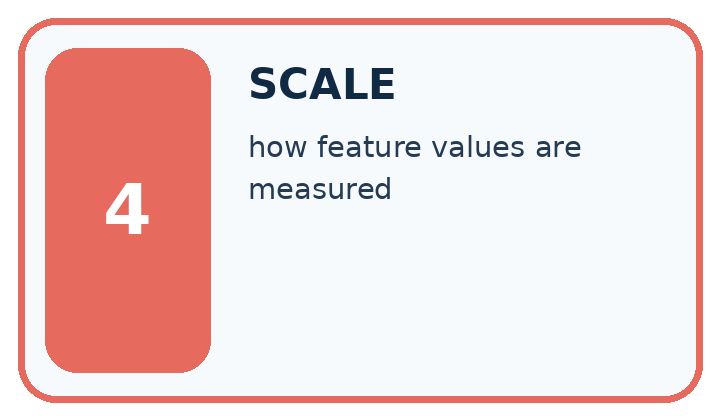
| Word | My own example | Not this / boundary |
|---|---|---|
| similarity | How alike two items are according to selected features and a declared comparison method. | |
| distance | A specified measure of how far apart two representations are. | |
| coordinate | A value identifying position along an agreed axis or within a space. | |
| scale | The units and range used to represent or compare a quantity. |
Words used in the closer explanation
| Word | Meaning |
|---|---|
| Feature vector | An ordered list of numeric features |
| Manhattan distance | The sum of absolute feature differences |
| Normalization | Rescaling features to a comparable scale |
Student lesson · 6 of 14
Follow a worked example
WORKED EVIDENCE
Reason Step by Step
Predict first. Then check each step. A correct answer without visible reasoning is incomplete evidence.
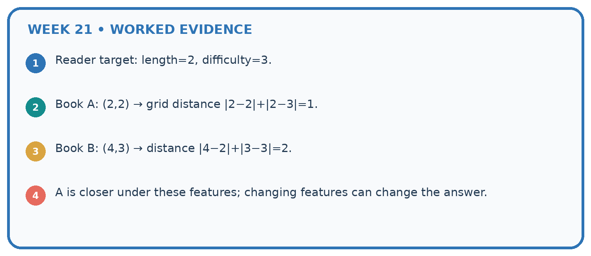
1. Reader target: length=2, difficulty=3.
2. Book A: (2,2) → grid distance |2−2|+|2−3|=1.
3. Book B: (4,3) → distance |4−2|+|3−3|=2.
4. A is closer under these features; changing features can change the answer.
Recalculate, retrace, or restate the reasoning in your own representation:
CHECK Did the evidence answer the exact question? Did the total, path, or source record stay consistent?
A closer explanation
Learn from the worked case
Cover the result before checking it. Say what is given, choose the procedure, and follow one step at a time. Then uncover the result and explain your first mismatch. Ask why a step is allowed, not only what number it produces.
A pictorial worked case: Similarity by Selected Traits
A fictional toy book matcher represents two preferences with numeric features.
The facts we will use
Target vector [2,5]. Candidate A=[2,2], B=[4,5], C=[3,4].
Use Manhattan distance: add absolute coordinate differences; return all smallest-distance candidates.


Read the picture one step at a time
Why this result follows
Each coordinate contributes according to the declared distance rule. Smaller distance means closer in this representation, not automatically a better reading experience. If one coordinate uses a much larger numerical scale, it can dominate the sum even when it is not more important. Feature units and scaling belong in the method record.
What this example does not establish
A toy numeric encoding does not establish meaningful interpersonal distances or suitability of a recommendation.
Student lesson · 7 of 14
Find and repair a mistake
ERROR DETECTIVE
Compare → Diagnose → Repair
Do not patch the answer. Find the earliest unsupported assumption, wrong step, or weak evidence.
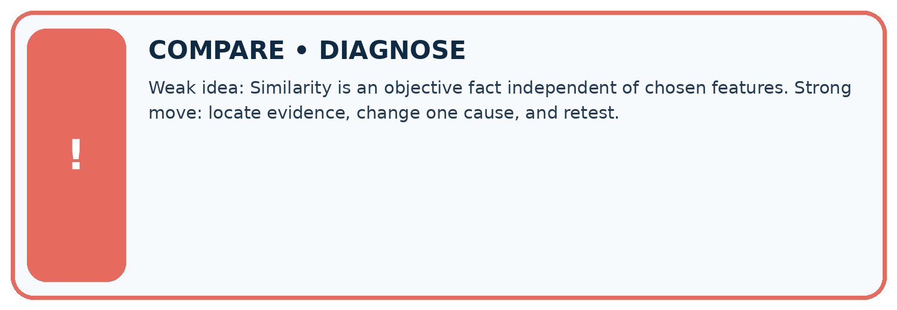
| Evidence record | Expected | Actual | Likely cause / next test |
|---|---|---|---|
| normal case | works | ||
| boundary case | stated rule | ||
| missing input | safe response | ||
| fresh transfer | generalizes |
Repair one cause. Why is this repair better than changing several things?
A closer explanation
Similarity depends on the features collected and the distance rule. Missing accessibility, cost or preference information can make the closest item unsuitable. Hard requirements should be checked separately.
Student lesson · 8 of 14
Practise together
LOGIC STUDIO
Trace Before You Run
Block code, pseudocode, tables, and diagrams are different ways to expose the same reasoning.

SET evidence_record PREDICT expected_result RUN one normal case and one boundary case COMPARE actual_result with expected_result IF different: locate first cause; change one factor; RETEST EXPLAIN result, limitation, and next safe step
Trace one input. Which line changes the state or chooses a path?
A closer explanation
If one feature is duration in minutes up to 60 and another a rating up to 5, raw distance may be dominated by duration. Specify scaling or weights before ranking; do not silently change units to get a preferred winner.
Practise with less help: Compute distances
Use workbook W2 for the connected example “Distance between feature vectors”. First fill the input and rule boxes. Try the middle steps before asking for a hint. After a hint, try the next step yourself.
| Plan | Do | Check |
|---|---|---|
| What is given? Which rule or procedure applies? | Record each intermediate step. | Does the result follow? What remains unknown? |
Explain your trace to a partner. Your partner points to one step to check. Swap roles on the next case. Each person writes their own explanation.
Check your reasoning
Use the worked case for Distance between feature vectors. Proposed explanation: “A successful run proves the conclusion”. Decide whether this explanation is supported. Point to the step or supplied fact that decides; explain your repair if needed.
Answer on your own before discussion. If you are unsure, say which step you need help with.
Explain the picture
Explain why B ceases to be a closest option without any candidate data changing.
This is supported practice. Keep the separately named independent case for an attempt before feedback.
Student lesson · 9 of 14
Run the investigation
EVIDENCE LAB
Predict → Test → Record → Explain
Keep expected and actual results separate. Surprises are useful data when recorded honestly.
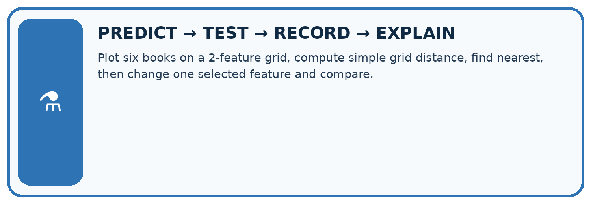
Plot six books on a 2-feature grid, compute simple grid distance, find nearest, then change one selected feature and compare.
| Test / input | Prediction | Actual | Evidence / calculation | Change or keep? |
|---|---|---|---|---|
| normal | ||||
| boundary | ||||
| missing | ||||
| fresh transfer |
What did the hardest test teach you that the normal test did not?
Plan → try → check
Before trying: what do I expect, and why? While trying: which step could first go wrong? Afterwards: what did I actually observe, and what should change? Keep “not run” if you only traced the procedure.
Student lesson · 10 of 14
Build your understanding
MASTERY
From Knowing the Word to Owning the Idea
Move upward only when you can produce evidence without copying the worked example.

1 • NAME: Define the concept without repeating the textbook.
2 • TRACE: Show the information, state, branch, calculation, or evidence path.
3 • APPLY: Solve a different example independently.
4 • CHALLENGE: Find a boundary case, counterexample, or unfair outcome.
5 • EXPLAIN LIMITS: Say when the result should not be trusted or used alone.
My strongest evidence of independent understanding:
Student lesson · 11 of 14
Connect your project
CUMULATIVE PROJECT
Transparent Book Recommender
Every week adds one inspectable piece. The system must show how it reached a result.
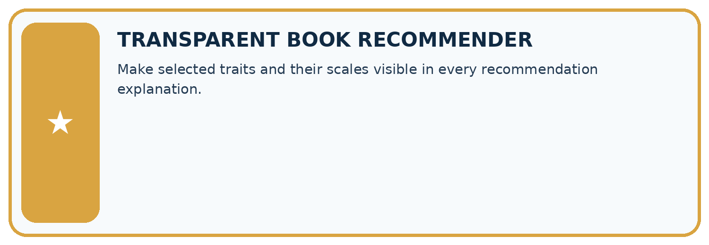
THIS WEEK’S CHECKPOINT Make selected traits and their scales visible in every recommendation explanation.
SYSTEM MAP Reader need → allowed inputs → transparent rule or score → ranked candidates → explanation → test record → human decision
What will you add, change, or verify in the project this week?
What should remain under human control?
RESPONSIBLE DESIGN Collect only necessary information. Show uncertainty and limits. Never confuse a ranking with a fact about a person.
Evidence for your project
Specify recommender feature meanings, units, scaling and tie policy before explaining nearest matches.
Student lesson · 12 of 14
Show what you know
INDEPENDENT MASTERY PROOF
Explain • Transfer • Test • Defend
Complete this page without copying the worked example. Your reasoning matters more than decoration.
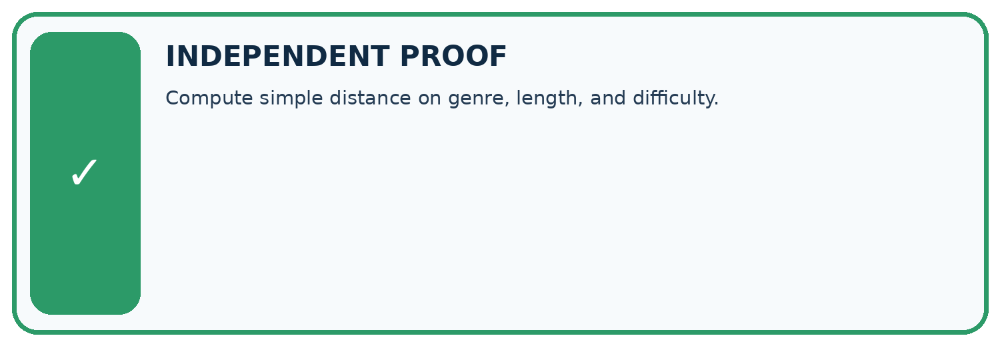
CHALLENGE Compute simple distance on genre, length, and difficulty.
1. My fresh example, trace, calculation, or design:
2. My evidence that it works (include a boundary or missing-data case):
3. One limitation, fairness concern, or situation needing human review:
SELF-CHECK □ I explained the mechanism □ I used evidence □ I tested a fresh case □ I named a limitation □ I can answer ‘why?’
Student lesson · 13 of 14
Study a complete case
Week 21 Worked case
Use the supplied details to practise the weekly concept before attempting the independent question. This case extends the illustrated lesson.
The situation
Traits are [animals,adventure]. A=[1,1], B=[1,0], C=[0,0]; query=[1,0].
The question
Use number of differing traits as distance.
Worked explanation
Distances: A=1, B=0, C=1. B is nearest with equal feature weights.
Explain it in your own words
Which detail supports the answer, and why does it matter?
Trace the supplied case visually
Count differing traits from query [1,0]
| Evidence or stage | Value or result |
|---|---|
| A [1,1] | 1 |
| B [1,0] | 0 |
| C [0,0] | 1 |
Traits are [animals,adventure]. A=[1,1], B=[1,0], C=[0,0]; query=[1,0].
Use number of differing traits as distance.
Distances: A=1, B=0, C=1. B is nearest with equal feature weights.
Student lesson · 14 of 14
Try a new case independently
Independent case: Rank independently
Target is [3, 2]. Options A [1, 2], B [3, 4], C [4, 2]. Calculate distances, select the closest, and identify a tie among the others.
Attempt this case before feedback. Record any help. Earlier examples below are further practice; a case already practised with feedback cannot establish fresh transfer.
Week 21 Independent application
Close the worked explanation. Apply the idea to this different question without copying.
Score similarity using one point for same topic and one for same difficulty. Target is space, easy. A is space, hard; B is animals, easy. What happens?
My answer, with a trace, calculation or supporting evidence
Create and test
Change one relevant detail. Predict the result before testing. Include a boundary or missing-information case when it helps reveal a limit.
My changed input and expected result
Connect to your project
Make selected traits and their scales visible in every recommendation explanation.
The evidence I will keep
Your teacher has the independent answer and scoring criteria. Complete the matching workbook week to keep your practice evidence together.
Transfer practice from the original programme
Represent books as [animal,short,illustrated] with 1=yes. Query=[1,1,0]; A=[1,0,0], B=[1,1,1], C=[0,0,0]. Count mismatches. What changes if illustrations matter twice as much?
Use feedback to improve
Attempt the independent case before hints. Record whether you worked alone, used a hint or followed a model. After feedback, fix the first unsupported step and explain why it changed. A later check uses a changed case, not a copied answer.